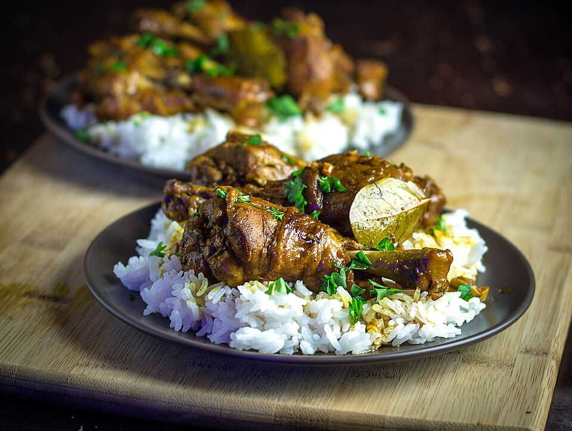

Chicken Adobo

Chicken Adobo is the iconic, national dish of the Philippines.
It involves braising chicken in a savory, aromatic blend of soy sauce, vinegar, garlic, bay leaves, and whole peppercorns.
Ingredients
- 2 ½ lbs. chicken cut into serving pieces
- 1 piece Knorr Chicken cube
- 2 cups lemon lime soda
- ¼ cup soy sauce
- ½ cup white vinegar
- 5 pieces dried bay leaves
- 1 head garlic
- 2 teaspoons whole peppercorn
- 3 tablespoons cooking oil
Steps
- Combine chicken, soy sauce, and 1 cup lemon lime soda. Mix. Marinate for at least 30 minutes.
- Heat oil in a pan. Pan-fry marinated chicken for 1 minute per side. Remove from the pan. Set aside.
-
Using the remaining oil, sauté garlic until it browns.
Put the pan-fried chicken back into the pan.
Add remaining marinade, lemon lime soda, whole peppercorn, and dried bay leaves. Let boil.
- Pour-in vinegar. Let the mixture boil. Stir.
- Add Knorr Chicken Cube. Cover and reduce heat between low to medium. Cook for 20 minutes.
- Remove the cover of the pan. Adjust heat to medium. Continue cooking while stirring every few minutes until the sauce evaporates.
- Transfer to a serving plate. Serve. Share and enjoy!
Home